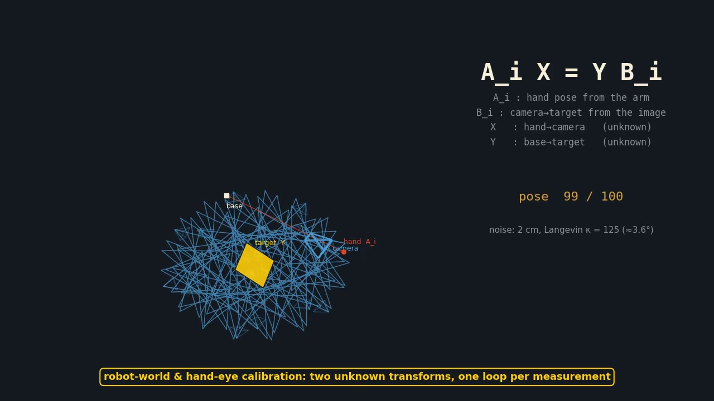
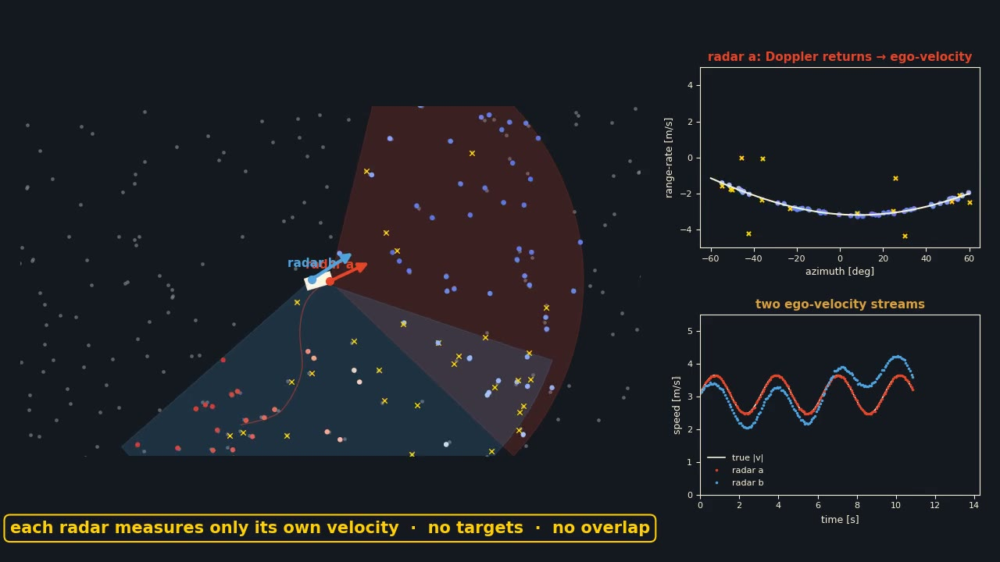
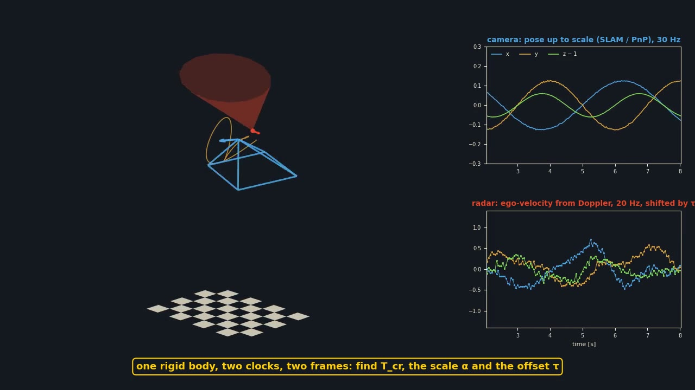

A Science Robotics review tracing humanoid locomotion control through three eras — classical model-based control, learning-based control, and emerging foundation- and world-model approaches — and what each assumes about models, data, and the tasks a humanoid is expected to do.

IRIS is a low-cost 3D-printed 6-DOF cinema robot that uses goal-conditioned transformer-based imitation learning to autonomously generate smooth, object-aware camera motion.


Generalized robot-world and hand-eye calibration (many sensors, many targets, unknown monocular scale) solved to certified global optimality by a semidefinite relaxation over the rotations. Re-implemented in Python in 2026: the paper's simulation studies, and the real 8-camera / 16-tag rig data solved with a duality gap of 1e-8, recovering the paper's 2.5 % tag-scale finding.

Low-cost, fully 3D-printed 6-DoF cinema robot arm (IRIS) with FOC actuators, differential wrist, and a vision-conditioned imitation-learning stack in ROS.

An open-source toolkit enabling rapid design and deployment of large-scale vibrotactile feedback systems for spatialized haptic interactions.

Introduces a wearable vibrotactile system integrated with UAV teleoperation, leveraging control barrier functions for safe human-drone interaction.

Metric3D v2 fine-tuned on 16,780 RGB-D stair images recovers stair rise and run from a single image (1.7 cm / 2.5 cm mean error on the archived scenes). BipedNav feeds that geometry to a five-link biped walking by virtual holonomic constraints; the page has an in-browser demo that runs the pipeline on your own photo.


Two Doppler radars on one vehicle calibrate each other from their own ego-velocities: the yaw and the translation axis are identifiable without targets or overlapping views. Re-implemented in Python and re-run in 2026: simulation sweep inside the paper's 2°/3° envelope, and the Endeavour bus pairs reproduced to 0.01 rad, with the weakly identifiable short-baseline pair called out.


Targetless spatiotemporal calibration of a 3D radar and a monocular camera: radar ego-velocity and scaled camera poses fused on a continuous-time B-spline trajectory to estimate the extrinsics, the scale and the time offset. Re-implemented in Python in 2026 with the paper's simulation studies, an identifiability check, and the radar front end run on the original handheld-rig recordings.

Proposes a weakly supervised attention-guided data augmentation strategy for fine-grained image classification tasks.

Applies generative design and additive manufacturing techniques to develop a self-balancing unicycle robot prototype.